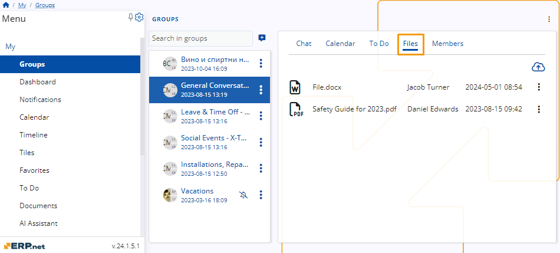
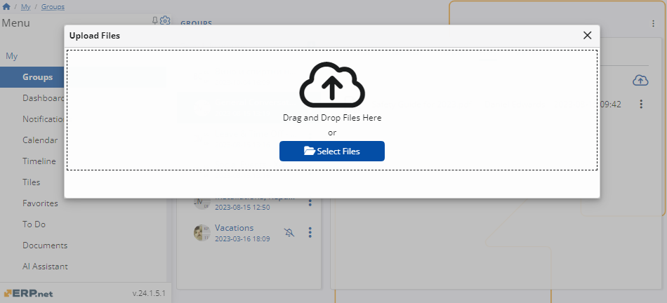
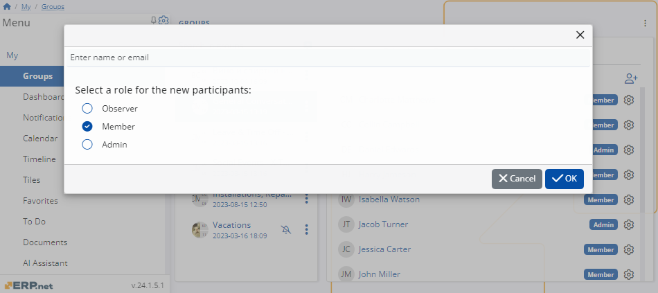

Features in Groups
Groups is a sub-section of My that provides a convenient platform for effortless communication, document exchange, task scheduling, and assignment among you and your colleagues.
Groups are created by an admin in the platform when they are needed, between people in the same company.
Chat
The Chat feature facilitates rapid communication among group participants.
It offers standard industry features such as message previewing and sending, reacting to and replying to messages from others, and even editing one's messages.

Calendar
The calendar feature enables authorized members to create and view a range of events and meetings, visible to the entire group.
Any group activities you create or participate in will also be reflected in your Calendar.

Time period of the calendar
To adjust the time period displayed on the calendar, utilize the dropdown menu.
You can select whether you prefer the period type to be Month or Workweek.
Create a new activity
Use the Create button to create a new activity.
Choose the type of activity you want to create from the drop-down list.
To create a new activity you need to fill a form with information about the activity and the participants in it.
Once you filled every field, click Save and reload and the activity will be added to the calendar.
To Do
The To Do tab showcases tasks assigned to both yourself and fellow group members, allowing you to mark those ready for completion.
With Member or Admin permissions, you can create new tasks and assign them to others.
Any to-dos added or assigned to you will also be visible in your personal Do space.

Create a task
To create a task click on the circular button with a + on it.
You can establish both a reminder and a due date for the task.
Once you’ve given a name and have set up the reminder, the person it’s assigned to, and the due date, click on the Create button to add it to the list of tasks.
Once the task is completed, click on the radio button next to it to mark it as done.

Tasks also offer various statuses like New, In** Progress**, or Waiting to indicate their progress.

Files
Within the Files tab, you have access to file attachments uploaded by either yourself or other group members.
Each file includes details such as its format, the name of the author, and the date and time of upload.

Upload files
To upload files to the group, click on the cloud icon located at the top left of the screen.

Upon doing so, a new window will appear. Here, you have the option to either drag and drop the file you wish to upload or browse your files and select the desired one.

File settings
To download or delete a file from the group, click on the three-dot button situated on the right side of the file.
From there, you can select the desired option to proceed.
Members
The Members tab contains a list of all members within the current group along with their respective roles.
Admins have the exclusive authority to add or remove participants and adjust their permission levels as needed.

Admin settings
Users assigned the Admin role within the group possess the authority to add members, modify their roles, and remove them from the group.
Add member
To add a new member to the group, click the Add member button in the top left corner.
This action will prompt a new window to appear, where you'll need to input the individual's name or email address and specify their role within the group.

As you begin typing the name or email, a drop-down menu will provide suggestions to assist you in locating the user.

After completing the necessary steps, click OK to confirm and finalize the process.
Change role
To modify a member's role, click on the settings icon located on the right side of the user's profile.

Then, click on the Change role to option. This will open the roles drop-down menu, allowing you to select the new role you wish to assign to the member.

Remove participant
To modify a member's role, click on the settings icon located on the right side of the user's profile.

Once you’ve done that click the Remove participant button.